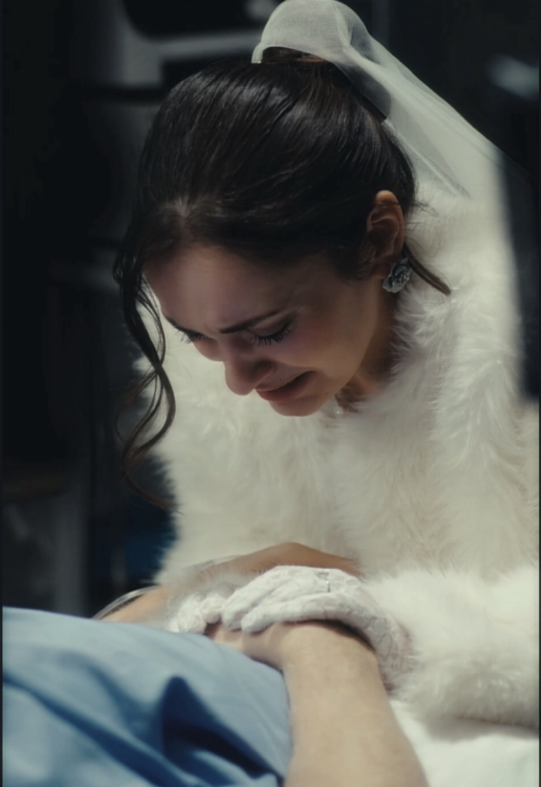
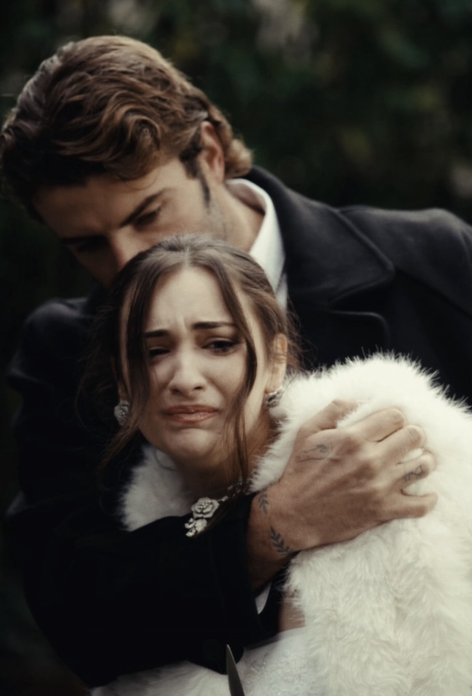
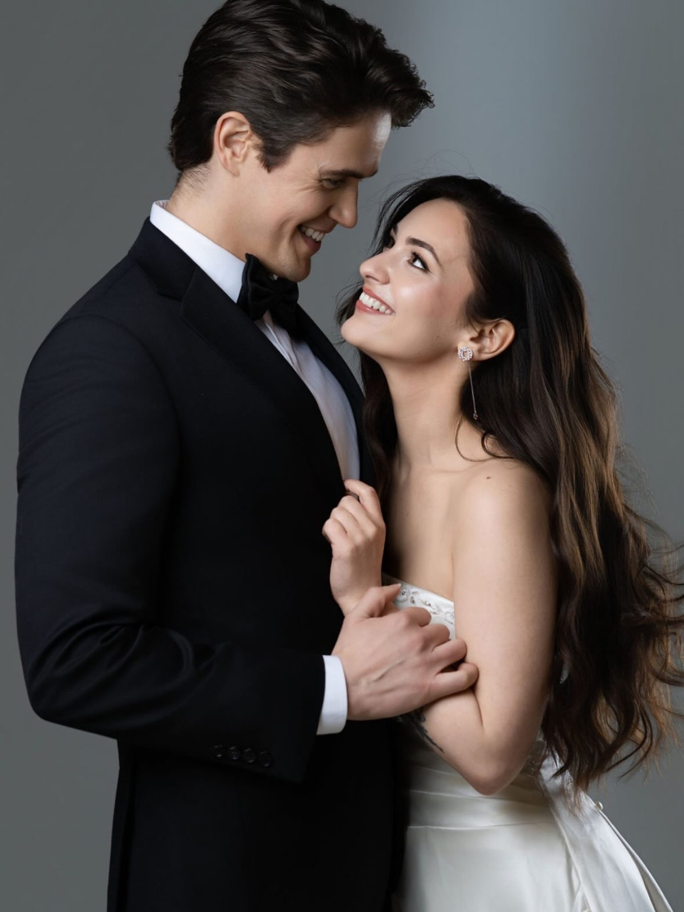
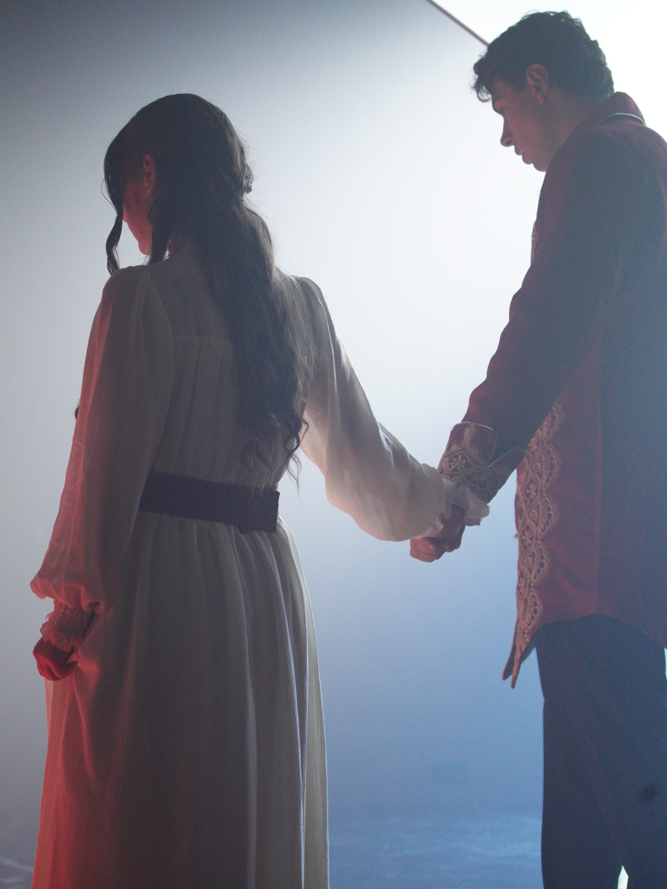
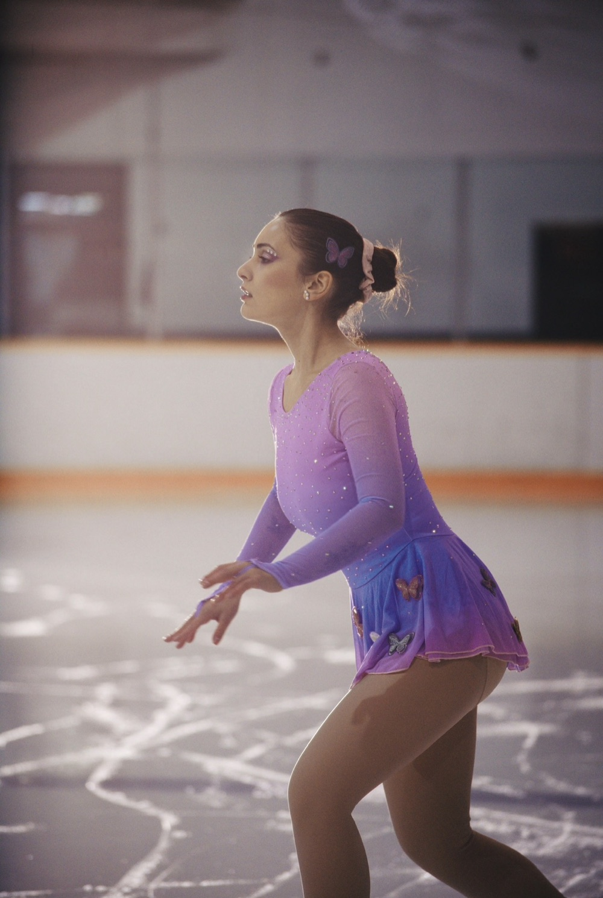
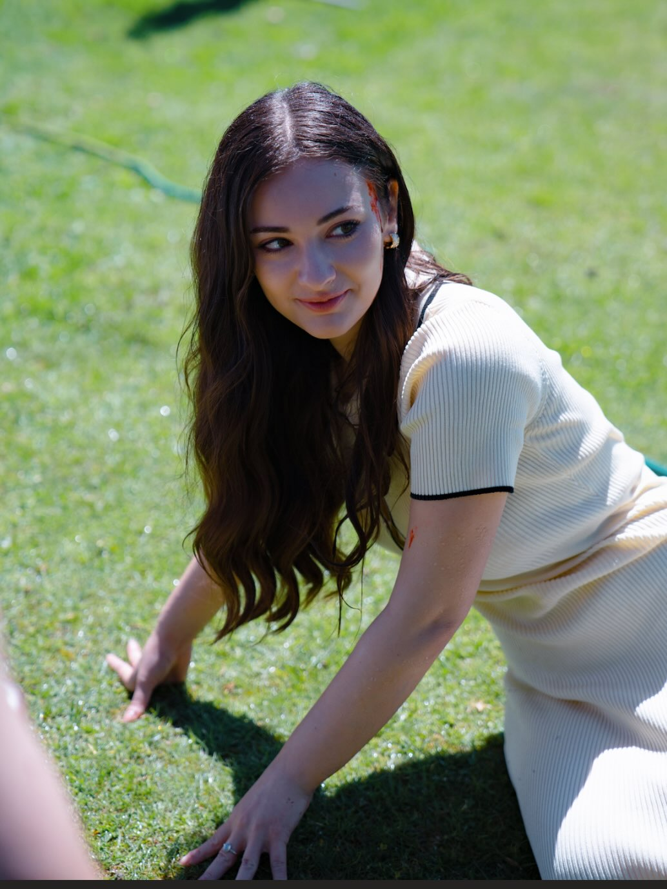
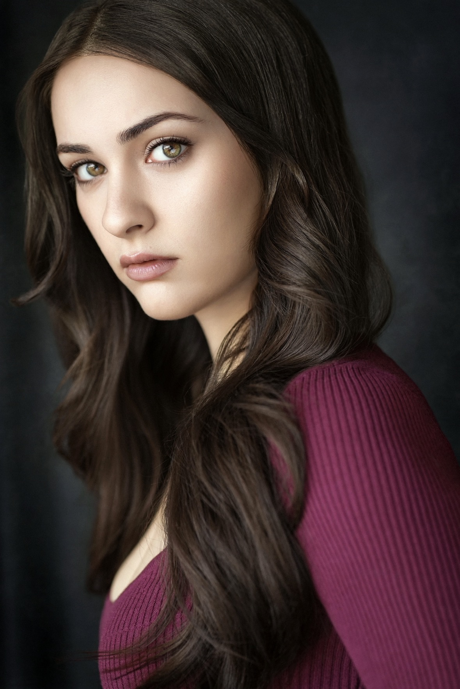
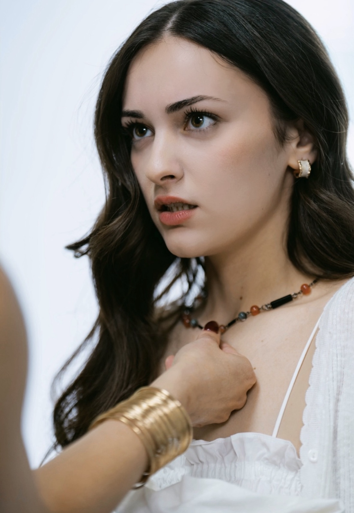
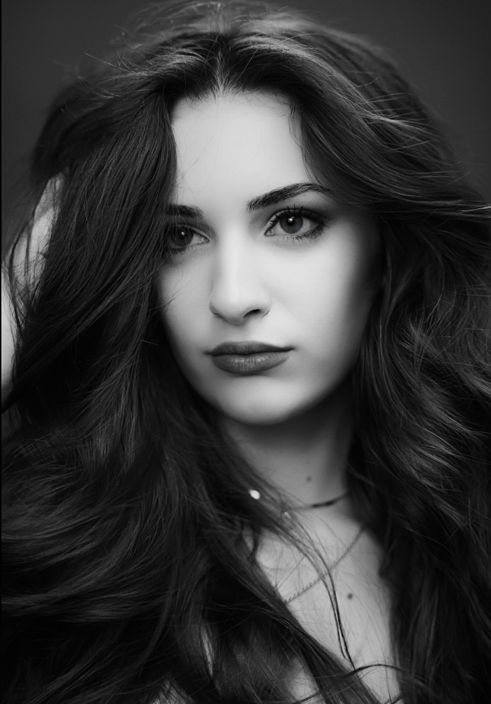
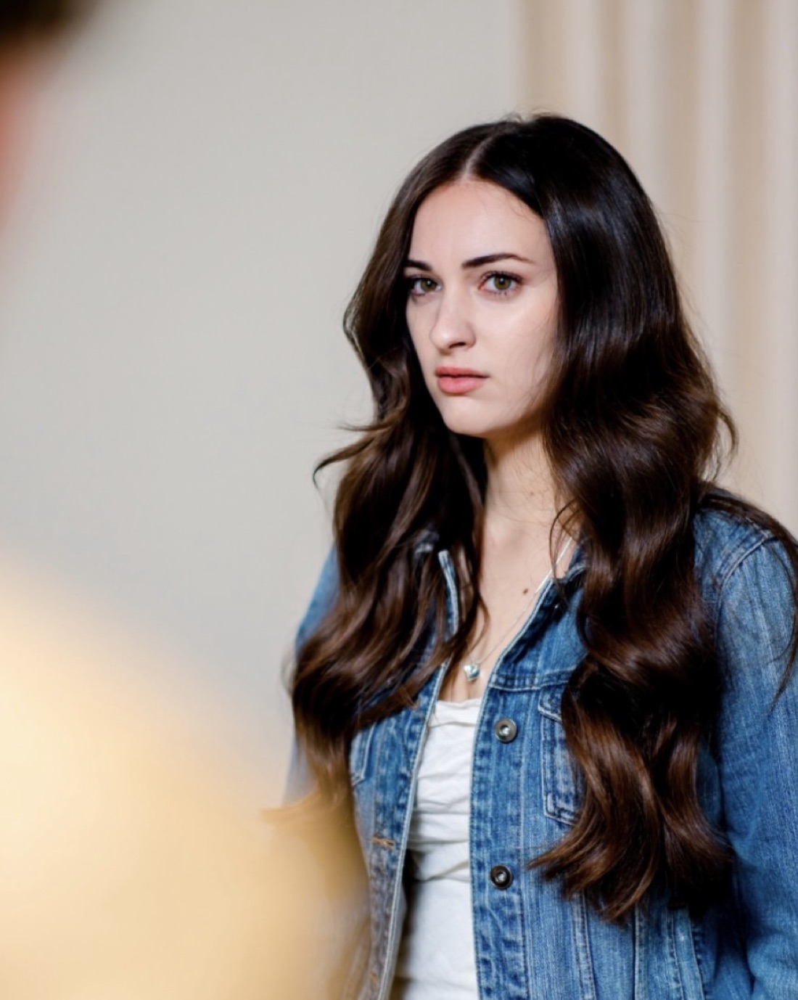

Range
The loss


The love


The light




Credits
Her own short film · in developmentIf She Asked Me To
Help bring it to the screen.
Support on GoFundMeTraining
- On-camera acting workshop · Simon LongmoreVADA
- Youth & teen film/TV workshop · Danielle Aufiero, Amber HornVancouver
- Musical theatre · Cher ZorrillaStage Coach Performing Arts
- Musical theatre · Chad MatchetteLindbjerg Academy
- Private lessons · Julian PaulVancouver
Award
Actor of the YearStage Coach Performing Arts

